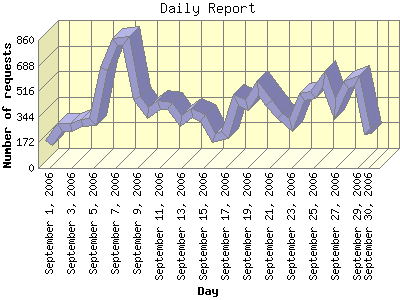

Report generated by Analog 6.0 and Report Magic 2.21
|
Web Server Statistics for "Harish Narayanan (hnarayan) - September 2006" Report generated by Analog 6.0 and Report Magic 2.21 |
The Daily Report identifies the activity for each day within the reporting period. Remember that one page hit can result in several server requests as the images for each page are loaded.

| Day | Number of requests | Number of bytes transferred | Percentage of the bytes | Percentage of the requests | |
|---|---|---|---|---|---|
| 1. | September 1, 2006 | 168 | 13.182 MB | 1.27% | 1.33% |
| 2. | September 2, 2006 | 275 | 11.595 MB | 1.11% | 2.17% |
| 3. | September 3, 2006 | 275 | 18.582 MB | 1.78% | 2.17% |
| 4. | September 4, 2006 | 299 | 17.451 MB | 1.68% | 2.37% |
| 5. | September 5, 2006 | 312 | 16.957 MB | 1.63% | 2.47% |
| 6. | September 6, 2006 | 662 | 18.549 MB | 1.78% | 5.24% |
| 7. | September 7, 2006 | 844 | 19.149 MB | 1.84% | 6.68% |
| 8. | September 8, 2006 | 852 | 24.340 MB | 2.34% | 6.74% |
| 9. | September 9, 2006 | 471 | 32.984 MB | 3.17% | 3.73% |
| 10. | September 10, 2006 | 368 | 27.401 MB | 2.63% | 2.91% |
| 11. | September 11, 2006 | 425 | 91.167 MB | 8.76% | 3.36% |
| 12. | September 12, 2006 | 415 | 67.821 MB | 6.51% | 3.28% |
| 13. | September 13, 2006 | 316 | 62.155 MB | 5.97% | 2.50% |
| 14. | September 14, 2006 | 372 | 14.958 MB | 1.44% | 2.94% |
| 15. | September 15, 2006 | 337 | 10.830 MB | 1.04% | 2.67% |
| 16. | September 16, 2006 | 204 | 9.357 MB | 0.90% | 1.61% |
| 17. | September 17, 2006 | 221 | 6.131 MB | 0.59% | 1.75% |
| 18. | September 18, 2006 | 459 | 17.498 MB | 1.68% | 3.63% |
| 19. | September 19, 2006 | 424 | 82.721 MB | 7.94% | 3.35% |
| 20. | September 20, 2006 | 537 | 95.482 MB | 9.17% | 4.25% |
| 21. | September 21, 2006 | 435 | 91.003 MB | 8.74% | 3.44% |
| 22. | September 22, 2006 | 351 | 134.980 MB | 12.96% | 2.78% |
| 23. | September 23, 2006 | 287 | 12.409 MB | 1.19% | 2.27% |
| 24. | September 24, 2006 | 474 | 20.466 MB | 1.97% | 3.75% |
| 25. | September 25, 2006 | 490 | 24.313 MB | 2.33% | 3.88% |
| 26. | September 26, 2006 | 601 | 22.957 MB | 2.21% | 4.75% |
| 27. | September 27, 2006 | 396 | 17.142 MB | 1.65% | 3.13% |
| 28. | September 28, 2006 | 559 | 28.061 MB | 2.69% | 4.42% |
| 29. | September 29, 2006 | 587 | 17.563 MB | 1.69% | 4.64% |
| 30. | September 30, 2006 | 227 | 14.049 MB | 1.35% | 1.79% |
Most active day September 8, 2006 : 481 pages sent. 852 requests handled. 25,522,073.00 served.
Daily average: 421 requests handled. 34.708 MB served.
This report was generated on November 12, 2006 23:03.
Report time frame September 1, 2006 00:41 to September 30, 2006 23:59.
| Web statistics report produced by: | |
 Analog 6.0 Analog 6.0 |  Report Magic 2.21 Report Magic 2.21 |